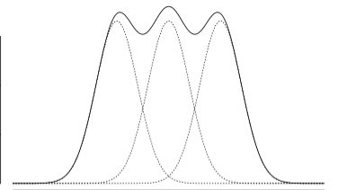
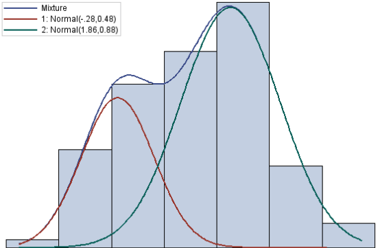
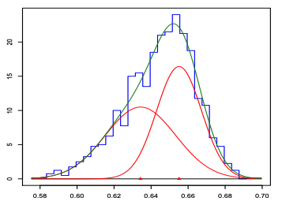
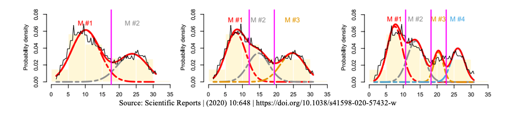

Topic 6 Mixture Distributions
(Expanded from Section 4.11)
We have outlined both discrete and continuous probability distributions and a few special families of distributions. In practical situations, single well-known distribution may not be able to characterize certain distributions well. For example, the log of income is usually considered to be log-normally distributed. According to the National Association of Colleges and Employers, a survey of 563,000 recent college grads finds the gender pay gap already impacting the class of 2020.
Assume that the log salaries of each of the three categories follow a normal distribution. The overall distribution of the mixture of the three distributions may not be a normal distribution. The general shape of a mixture density could be the following form.

6.1 Definition of Mixture Model
The idea is to find the density function of a population that contains several sub-populations with different probability distributions. Recall that a function \(f(x)\) is a density function of random variable \(X\) if and only if
\(f(x) \ge 0\);
\(\int f(x) dx = 1.\)
Before we introduce the formal definition of mixture mode, let’s look at the following example.
Example 1: Starting salary of college graduates is an important factor in college ranking used by US News and Report. Assume that we are interested in the distribution of starting salary of WCU students. There are about 20% are graduate students. Since the pay scales are different between graduate and undergraduate students. Therefore, the starting salary of undergraduate students is different from that of graduate students. Let \(X_1\) be the random variable representing the starting salary with density function \(f_(x)\) and \(X_2\) be the random variable representing the starting salary of graduate students with density function \(f_2(x)\). Now let \(X\) be the random variable representing the starting of all WCU graduates with density \(f(x)\), the density function can be defined as \[ f(x) = (1-0.8)f_1(x) + 0.2f_2(x) \] We can check that \(f(x)\) is a valid density function in the following:
Since \(f_1(x) \ge 0\) and \(f_2(x) \ge 0\), therefore, \(f(x) = 0.8f_1(x) + 0.2f_2(x) \ge 0\);
Note that \(\int f_1(x) = 1\) and \(\int f_2(x) = 1\). Therefore, \(\int f(x) = \int [0.8 f_1(x) + 0.2f_2(x)]\) \(= 0.8\int f_1(x) + 0.2 \int f_2(x) = 0.8\times 1 + 0.2 \times 1 = 1.0\)
Remarks. Here are several remarks about the mixture distribution.
Unlike in the above example, we know the proportion of the graduate student population which is 20%. In general, the proportion of sub-populations may not be known in practice. In this case, the proportion is considered as a population parameter that can be estimated from the sample. For example, we assume the graduate population to be \(\alpha\), then the undergraduate proportion is \(1-\alpha\). The above density function can then be written as \(f(x) = (1-\alpha)f_1(x) + \alpha f_2(x)\). In other words, the density function of a mixture distribution is equal to the weighted average of the density functions of the sub-populations.
The density of the weighted average of random variable \((1-\alpha)X_1 + \alpha X_2\) is NOT \((1-\alpha)f_1(x) + \alpha f_2(x)\). We will discuss the distribution of the linear combination of independent* random variables later this semester.*
We can also replace the density functions with the corresponding cumulative distributions (CDF) in the above definition of the mixture distribution.
6.1.1 Definition of K-component Mixture Distributions
The following is the definition of a k-component mixture distribution.
Definition: Let \(f_1(x), f_2(x), \cdots, f_k(x)\) be the density functions of k sub-populations. The density function of the mixture of these sub-populations is given by \[ f(x) = p_1f_1(x) + p_2f_2(x) + \cdots + p_kf_k(x) \] where \(p_1, p_2, \cdots, p_k\) (\(0 \le p_i\le 1\)) are the corresponding proportions in the mixture of k sub-populations with \(p_1 +p_2 + \cdots + p_k = 1\).
Remarks: Since the above definition involves finite sub-populations, we it finite mixture distribution. There are mixture distributions that may involve infinite sub-populations or even uncountably infinite sub-populations (e.g., compound distribution). The finite mixture model is commonly used in practice.
6.1.2 Properties of Finite Mixture Distributions
In previous notes, we introduced the steps for characterizing the distribution of a random variable:
Explicitly define the random variable;
Define the probability distribution (i.e., specified distribution functions such as density or mass functions);
Provide formulas to calculate the key numerical characteristics such as mean, variance, etc. More generally, provide formulas to calculate moments of the distribution.
Recall also that the expectation of a single continuous variable with density function \(f(x)\) is defined in the following form
\[ E[X] = \int_{-\infty}^\infty xf(x)dx \] If the random variable is discrete with probability distribution function \(P(X = x)\), then expectation of \(X\) is then defined to be
\[ E[X] = \sum_{x}xP(X = x) \]
In Example 1, we have explicitly defined the random variable that and the associated density function. We did not discuss the expectation and variance, etc. Next, we introduce a property of a general moment of mixture distributions.
Property 1: Let \(X_1, X_2, \cdots, X_k\) denote random variables from the \(k\)-component distributions, and let X denote a random variable from the mixture distribution. Then, for any function \(h(\cdot)\) for which \(E[h(X_i)]\) exists, and assuming that the component densities \(f_i(x)\) exist, for \(i = 1, 2, \cdots, k\), then \[ E[h(X)] = \int_{-\infty}^\infty h(x)\sum_{i=1}^k p_i f_i(x) dx = \sum_{i=1}^k p_i\int_{-\infty}^\infty h(x)f_i(x) dx = \sum_{i=1}^k p_i E[h(X_i)] \]
k-th Moment: Let \(X\) be a random variable with density function \(f(x)\), the k-th of \(X\) is defined to be \[ \mu^k = \int_{-\infty}^\infty x^k f(x) dx \]
The first moment of the expectation. The variance \(E[(X-\mu)^2] = E[X^2] - \mu^2\), the difference between the 2nd moment and the square of the first moment.
Example 2: Let \(X\) be the mixture distribution of two uniform distributions \(U_1(0, 10)\) and \(U_2(8, 14)\) with mixing proportions \(p_1\) and \(p_2\) respectively. Clearly, the two uniform density functions are given by
\[ f(x) = \left\{\begin{aligned} & 1/(10-1), & x \in (0,10)\\ &0, & x \notin (0,10) \end{aligned}, \right. \] and \[ f(x) = \left\{\begin{aligned} & 1/(14-8), & x \in (8,14)\\ &0, & x \notin (8,14) \end{aligned}. \right. \] The expectations of the two uniform distributions are \(\mu_1 = (10 + 0)/2 = 5\) and \(\mu_2 = (8 + 14) / 2 = 11\).
Now using the above property, we have \[ E[X] = \int_{-\infty}^\infty xf(x)dx = \int_{-\infty}^\infty x[p_1f_1(x) + p_2f_2(x)]dx \\ = p_1\int_{-\infty}^\infty xf_1(x)dx + p_2\int_{-\infty}^\infty xf_2(x)dx = p_1\mu_1 +p_2\mu_2 = 5p_1 + 11p_2. \] since \(p_1 + p_2 = 1\).
With a closer look at the above formula of expectation, we can see that expectation of the mixture distribution is equal to the weighted average of expectations of the sub-populations. That is, it is the expected mean (“expectation of sub-population means”) if we consider the sub-population mean as a random variable with mixing proportions as their corresponding probabilities.
To be more specific, we can define a new random variable \(Y\) with the following probability distribution table
| RV (Y) | P(\(Y=y\)) |
|---|---|
| \(E[X|Y=1] = E[X_1] = \mu_1 = 5\) | \(p_1\) |
| \(E[X|Y=2] = E[X_2] = \mu_2 = 11\) | \(p_2\) |
Using the above probability distribution of \(Y\), we can then rewrite the expectation of the mixture distribution as
\[ E_X[X] = p_1\mu_1 +p_2\mu_2 = p_1E[X|Y=1] + p_2E[X|Y=2] \stackrel{def}{=} E_Y(E_X[X|Y]). \]
This leads to the definition of conditional expectation in the following. Let \(X\) and \(Y\) be two random variables. Assume that \(X\) is a continuous variable, the density of \(X\) conditioning on \(Y\) is \(f(x|Y)\). The conditional expectation of \(X|Y\) (reads \(X\) conditioning on \(Y\)) is given by
\[ E[X|Y] = E_X[X|Y] = \int_{-\infty}^\infty xf(x|Y)dx. \]
Obviously, \(E[X|Y]\) is random because \(Y\) is random. In finite mixture distribution, \(Y\) represents the subpopulation. Therefore, the expectation of the overall mixture distribution is
\[ E_X[X] = E_X[E_Y(X|Y)] = p_1\int_{-\infty}^\infty xf(x|Y=1)dx + p_2 \int_{-\infty}^\infty xf(x|Y=2)dx \\ = p_1\mu_1 + p_2\mu_2. \]
The above equation is correct in general for any two random variables.
Property 2: Conditional Expectation For any given random variables \(X\) and \(Y\), the following property holds \[ E_X[X] = E_X[E_Y(X|Y)] . \]
6.1.3 Variance Decomposition
We have introduced conditional expectation and its property. In this section, we introduce the variance decomposition formula using conditional expectation. We will also use these formulas in later chapters of this course.
We have expressed the overall expectation of the mixture distribution in terms of the expectations of individual subpopulations. A natural question is whether the variance can be decomposed into the variances of individual subpopulations.
The following variance decomposition property answers the question.
Property 3: Variance Decomposition: Let \(X\) and \(Y\) be two random variables. Then \[ Var[X] = E[Var(X|Y)] + Var[E(X|Y) \] Proof: First of all, we note that \(Var[X] = E(X - E[X])^2 = E[X^2] - (E[X])^2\). This implies that \[ Var(X|Y) = E(X^2|Y) - [E(X|Y)]^2 \] Similar to the conditional expectation, the conditional variance is also a random variable. Therefore,
\[ \begin{aligned} E_Y[Var(X|Y)] & =E_Y[E(X^2|Y)] - E_Y\{ [E(X|Y)]^2\} &\\ & = E[X^2] - E_Y\{ [E(X|Y)]^2\} &\\ & = \{E[X^2] - (E[X])^2 \} - \{ E_Y\{ [E(X|Y)]^2\} - (E[X])^2 \}\} &\\ & = Var[X] - \{ E_Y\{ [E(X|Y)]^2\} - \{E_Y[E(X|Y)]\}^2 \} &\\ & = Var[X] - Var_Y[E_X(X|Y)] \end{aligned} \] Moving the terms around, we have \[ Var[X] = E_Y[Var(X|Y)] + Var_Y[E_X(X|Y)] \] This completes the proof.
Remark: The right hand of the variance decomposition formula only involves the conditional random variable. We can express the right-hand formula in terms of individual variances, expectations, and mixing proportions.
Example 3. Let \(X\) be the mixture distribution defined based on two distributions with density functions \(f_1(x)\) and \(f_2(x)\). Assume the expectation and the variance of the two subpopulations are \((\mu_1, \sigma_1^2)\) and \((\mu_2, \sigma_2^2)\) respectively. Assume further that the mixing proportions are \(p_1\) and \(p_2\) with \(p_1 + p_2 = 1\). Find the variance of the mixture distribution Var[X].
Solution: We two different methods to find the variance.
Method 1: Using the variance decomposition formula.
By the definition of expectation and variance, we obtain the two terms on the right side of the formula in the following. \[ \begin{aligned} E_Y[Var(X|Y)] & = p_1\sigma_1^2 + p_2\sigma_2^2 &\\ \end{aligned} \] Note that \(E\{E[X|Y]\} = p_1\mu_1 + p_2\mu_2\). Therefore,
\[ \begin{aligned} Var_Y[E(X|Y)] & = E_Y\{E(X|Y) - E_Y[E(X|Y)]\}^2 &\\ & = E_Y\{E(X|Y) - (p_1\mu_1 + p_2\mu_2)\}^2 &\\ & = p_1(\mu_1-p_1\mu_1-p_2\mu_2)^2 + p_2(\mu_2-p_1\mu_1-p_2\mu_2)^2 &\\ & = p_1[\mu_1^2 -2\mu_1 (p_1\mu_1+p_2\mu_2) + (p_1\mu_1+p_2\mu_2)^2] &\\ & + p_2[\mu_2^2 -2\mu_2 (p_1\mu_1+p_2\mu_2) + (p_1\mu_1+p_2\mu_2)^2] &\\ & = p_1\mu_1^2 + p_2\mu_2^2 -2(p_1\mu_2+p_2\mu_2)^2 + (p_1+p_2)(p_1\mu_2+p_2\mu_2)^2 &\\ & = p_1\mu_1^2 + p_2\mu_2^2 -(p_1\mu_2+p_2\mu_2)^2. \end{aligned} \] Therefore,
\[
Var[X] = p_1\sigma_1^2 + p_2\sigma_2^2 + p_1\mu_1^2 + p_2\mu_2^2 -(p_1\mu_2+p_2\mu_2)^2.
\]
Method 2: Using the moment formula and the relation \(Var[X] = E[X^2] - (E[X])^2\). Note that \(E[X] = p_1\mu_1 + p_2\mu_2\). From Property 1, we can find the 2nd moment of \(X\) in the following \[ E[X^2] = p_1\mu_1^{(2)} + p_2\mu_2^{(2)} \] where \(\mu_1^{(2)}\) and \(\mu_2^{(2)}\) are the 2nd moment of the individual sub-populations which can be expressed in terms of the individual means and variance as follows \[ \mu_1^{(2)} = \sigma_1^2 + \mu_1^2 \mbox{ and } \mu_2^{(2)} = \sigma_2^2 + \mu_2^2 \] With the above facts, we have \[ E[X^2] = p_1(\sigma_1^2 + \mu_1^2) + p_2(\sigma_2^2 + \mu_2^2) \] Therefore,
\[ Var[X] = p_1(\sigma_1^2 + \mu_1^2) + p_2(\sigma_2^2 + \mu_2^2) - ( p_1\mu_1 + p_2\mu_2)^2, \] which is identical to the result obtained in Method 1.
6.2 Two-component Normal Mixture Distribution
Let \(X_1\) and \(X_2\) be two normal distributions with distributions \(N_1(\mu_1, \sigma_1)\) and \(N_2(\mu_2, \sigma_2)\), respectively and \(X\) be the random variable representing the mixture distribution of the two normal populations with proportions \(p_1\) and \(p_2\) respectively.
The explicit expression of the mixture density function is given by \[ f(x) = \frac{p_1}{\sqrt{2\pi}\sigma_1}e^{-\frac{(x-\mu_1)}{2\sigma_1^2}} + \frac{p_2}{\sqrt{2\pi}\sigma_2}e^{-\frac{(x-\mu_2)}{2\sigma_2^2}} \]
The expectation and variance in Example 4 apply to this two-component normal mixture distribution.
Some Special Cases: In general, the mixture distribution of finite normal distribution is NOT a normal distribution. Next, we use the two-component normal mixture distribution as an example to show that a finite normal mixture can be a normal distribution only in some special cases.
For a two-component normal mixture distribution, if one of the mixing proportions is zero (i.e., \(p_1 = 0\) or \(p_2 = 0\)), then the resulting mixture is a normal distribution.
If \(\mu_=\mu_2\) and \(\sigma_1 = \sigma_2\), then the resulting mixture is also a normal distribution.
The following figure shows the general two-component normal mixture.

The above figure is based on simulated data from \(N_1(\mu_1, \sigma) = N_1(-2.8, 0.48)\) and \(N_2(\mu_2, \sigma_2) = N_2(1.86, 0.88)\) with mixing proportion \(p_1 = 0.4\) and \(p_2 = 0.6\), respectively.
6.3 Use Mixture Distributions
Mixture distributions are widely used in both classical statistics and modern machine learning areas.
6.3.1 Fitting Complex Data Using Mixture Distributions
In real-world applications, it is quite often that a single well-established distribution does not fit the data with a complex structure. In this case, we may use mixture distributions to characterize the complex pattern.
Example 5: Pearson fit a mixture of two normal distributions to Naples’ crab data (1989). The hypothesis was that the data was in fact a mixture of two different species of crabs. Although the empirical data histogram is single-peaked, the mixture of two normal produced a better fit.
(Source: K. Pearson: Contributions to the Mathematical Theory of Evolution. Philosophical Transactions of the Royal Society of London. A, 1894.)
The following figure shows the histogram and actually fitted density curve of the two-component normal mixture distribution.

6.3.2 Clustering with Mixture Distributions
Clustering analysis is one of the most important tasks in both classical statistics and modern machine learning. There are many well-established algorithms for clustering. Mixture model-based clustering is a statistical-based method that has a solid theoretical base. It is one of the most powerful unsupervised machine learning algorithms.
One of the questions in many applications is to find data points that have some sort of similarity and then cluster them to define several groups to reduce variations in modeling. One task in clustering is to decide the optimal number of clusters to group the data. Too many groups and too few groups will increase the heterogeneity of the data when modeling. This means when using mixture distribution, the number of mixture components needs to be determined. We can use goodness-of-fit metrics to determine the appropriate number of mixing components.
The following figure shows an empirical distribution (the black unsmooth curve). Three candidate mixture distributions were fit to the data.

We can see that the leftmost figure shows the fit of a two-component normal mixture, the middle figure represents a three-component normal mixture and the right-hand side is a four-component normal mixture distribution. It turns out the three-component normal mixture has the best fit.